Hip-hop
A hip-hop nem csak egy táncstílus, hanem egy életstílus is. Ez a mozgalmas és energikus táncforma ötvözi a ritmust, az önkifejezést és a kreativitást. A Perfect Moves hip-hop tanfolyamai lehetőséget kínálnak a résztvevőknek, hogy megismerjék ezt az izgalmas és lendületes műfajt.
Tanuld meg a hip-hop alapjait és haladj a haladó szintekig elkötelezett instruktoraink vezetésével. Merülj el a hip-hop világában, fejleszd kreativitásodat, és találd meg saját stílusodat azáltal, hogy részt veszel dinamikus tanfolyamainkon.
Vegyél részt inspiráló workshopjainkon, ahol a legfrissebb hip-hop trendeket sajátíthatod el és alkalmazhatod gyakorlatban.
Jazz
A jazz tánc egy rendkívül kifinomult és expresszív műfaj, amely ötvözi az eredeti jazz zene ritmusát és az egyedi táncmozdulatokat. Ez a stílus szabad, kreatív és érzelmekkel teli, lehetőséget adva a táncosoknak a személyes kifejezésre.
A jazz tánc jellegzetessége a dinamikus lábmunka, a szabadon áramló mozdulatok és a karakteres gesztusok. Rugalmassága lehetővé teszi a táncosoknak, hogy egyéni stílusukat és személyiségüket belevigyék a táncba.
Balett
A balett a tánc eleganciájának és precizitásának megtestesítője. Ez a művészet teljes testkontrollt, gráciát és technikai kifinomultságot követel meg, miközben egyedülállóan szép koreográfiával és zenével ötvözi.
A balett különlegessége a kifinomult mozdulatok és a tökéletes tartás. A táncosok olyan mozdulatokat hoznak létre, amelyek lágyan áramlanak, miközben a testük teljes ellenőrzése alatt áll.
A Perfect Moves balett tanfolyamai egyensúlyozzák a klasszikus repertoár elemeit és a modern balett stílusjegyeit. Ezáltal lehetőség nyílik a diákoknak arra, hogy kreatívan kifejezzék magukat a balett hagyományain belül.
Salsa
A Salsa nem csupán tánc, hanem egy életre szóló szenvedély! Eredete Latin-Amerikából származik, és egy olyan táncstílust jelent, amely tele van vibráló ritmusokkal, érzékiséggel és szenvedéllyel.
A Salsa a ritmus, a szenvedély és a szoros táncok művészete. A zenéhez való szoros kapcsolat és az egymásra hangolódás teszi ezt a táncot különlegessé és felejthetetlenné.
A Perfect Moves Salsa tanfolyamai minden szinten, kezdőtől a haladóig, lehetőséget kínálnak a résztvevőknek a ritmus és a mozdulatok tökéletesítésére. Tanáraink segítségével garantáltan felfedezed a Salsa tánc örömét.
Társastáncok
A társastáncok egy igazi társasági művészet, ahol a különböző stílusok és mozgások találkoznak. Ezek a táncok nemcsak a testmozgásról szólnak, hanem az elegancia, az együttműködés és a szórakozás jegyében is.
A Perfect Moves társastánc tanfolyamai különféle stílusokat ölelnek fel, beleértve a tango, a cha-cha, a waltz, és még sok más stílust. Minden tánc karakteres és kifinomult, ahol az elegancia és a technika összetalálkozik.
Válassz a kezdőtől a haladó szintekig terjedő tanfolyamainkból, és lépésről lépésre fedezd fel a társastáncok gazdag világát. A szakképzett tanáraink segítenek abban, hogy magabiztosan és örömmel tánctudást szerezz.
 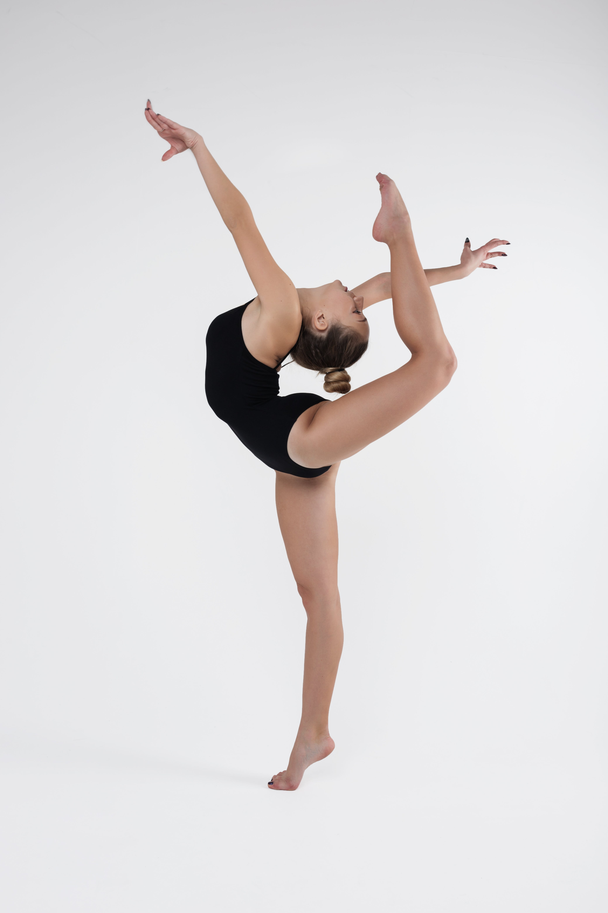
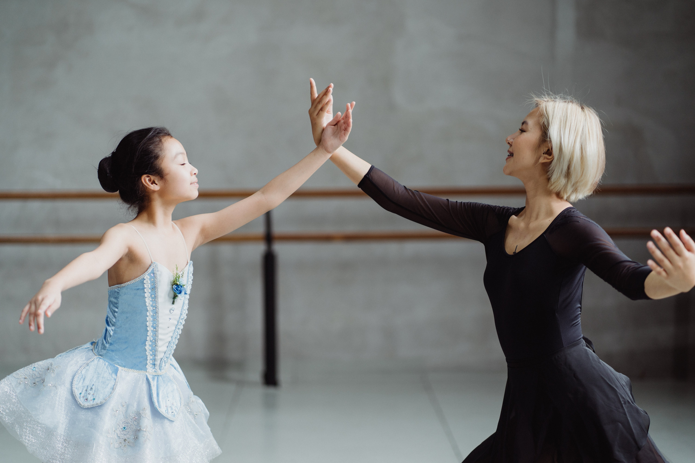
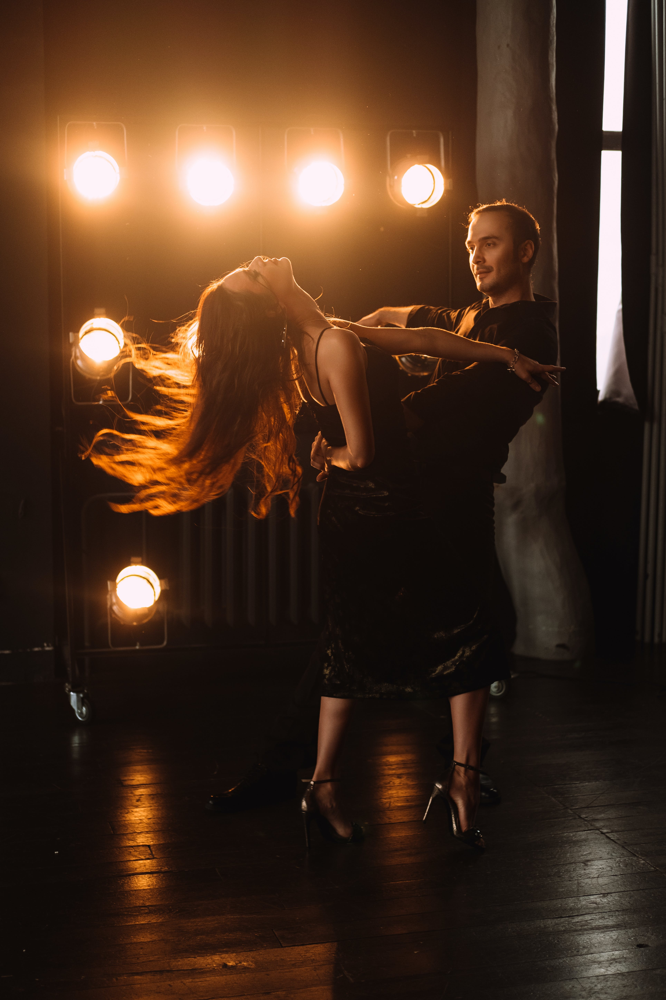
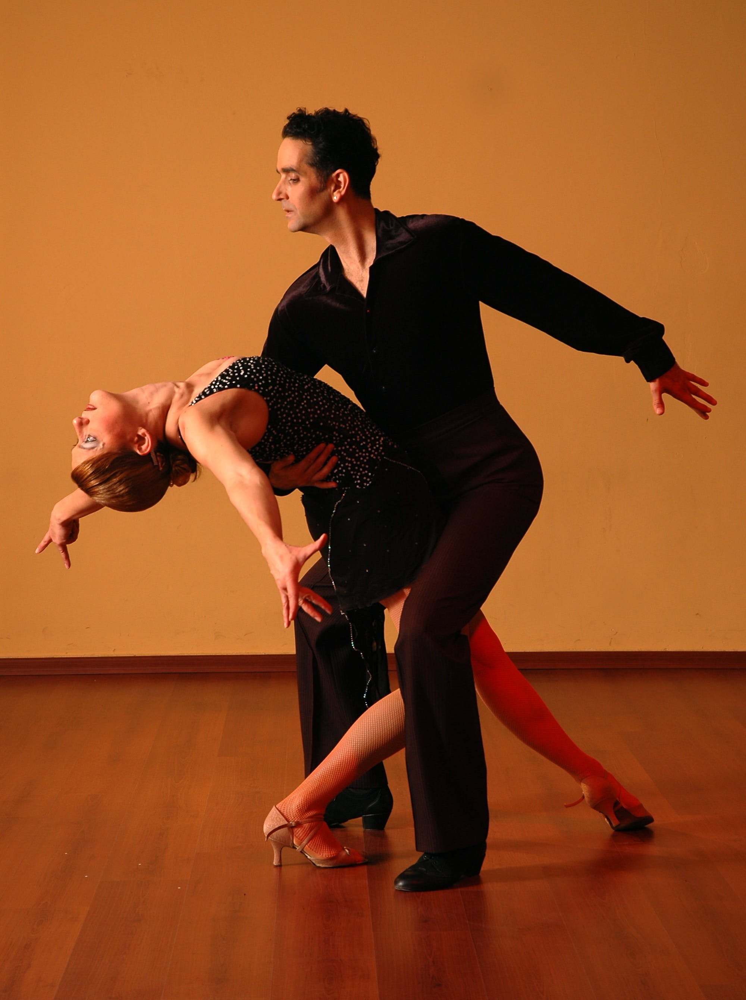
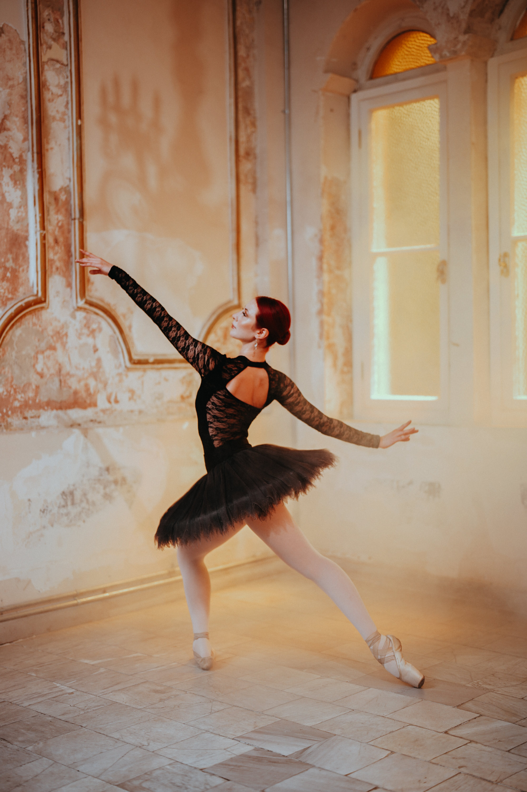
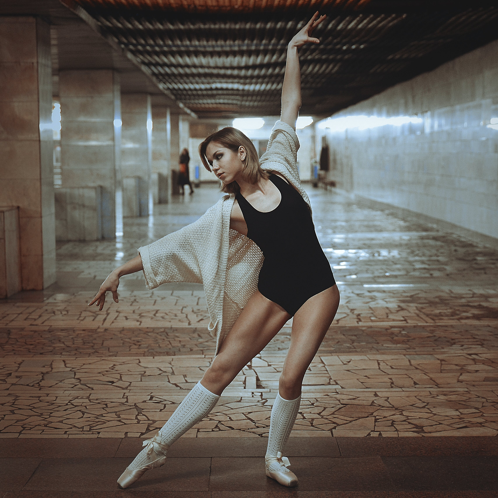
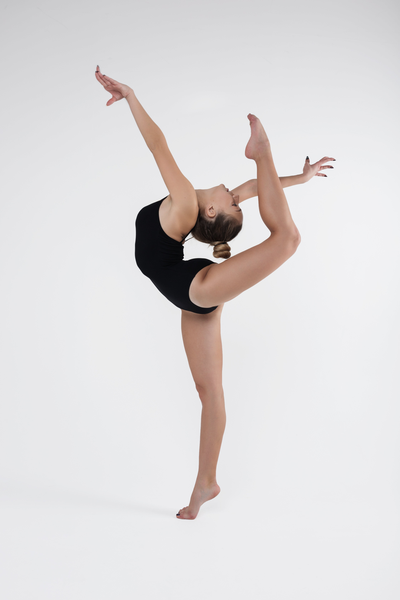
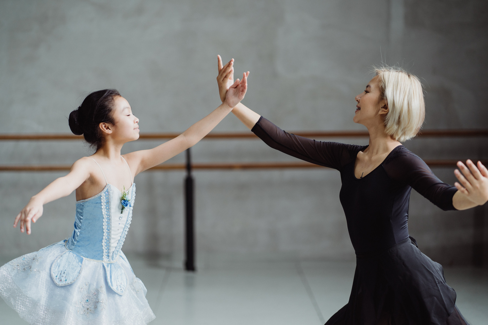
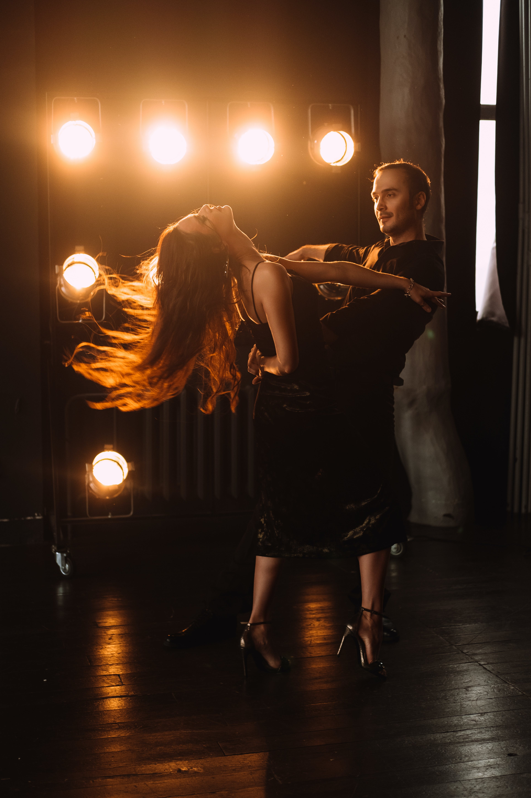
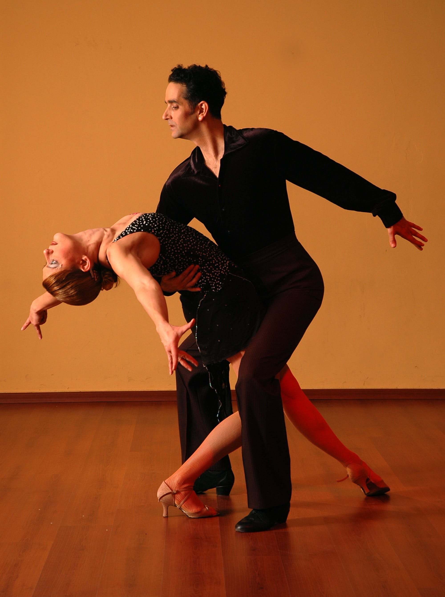
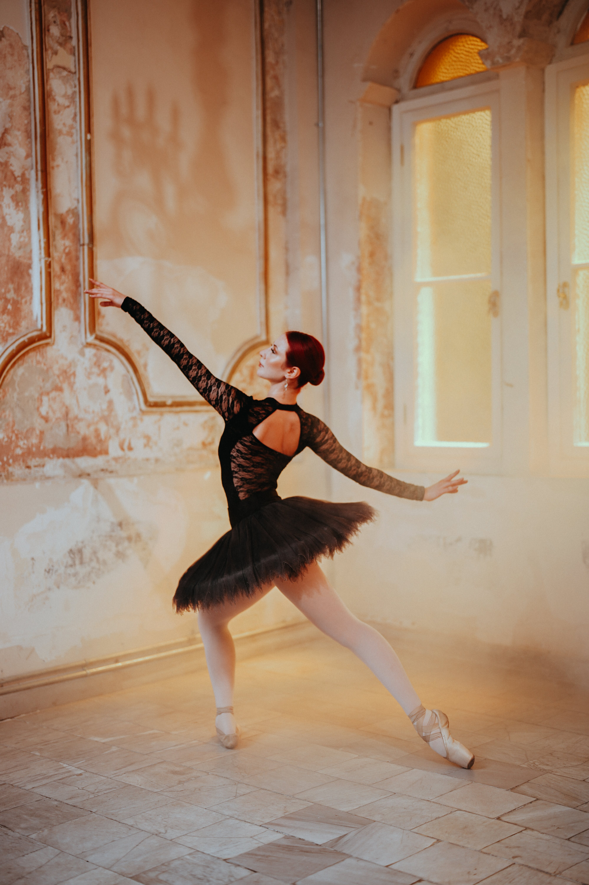
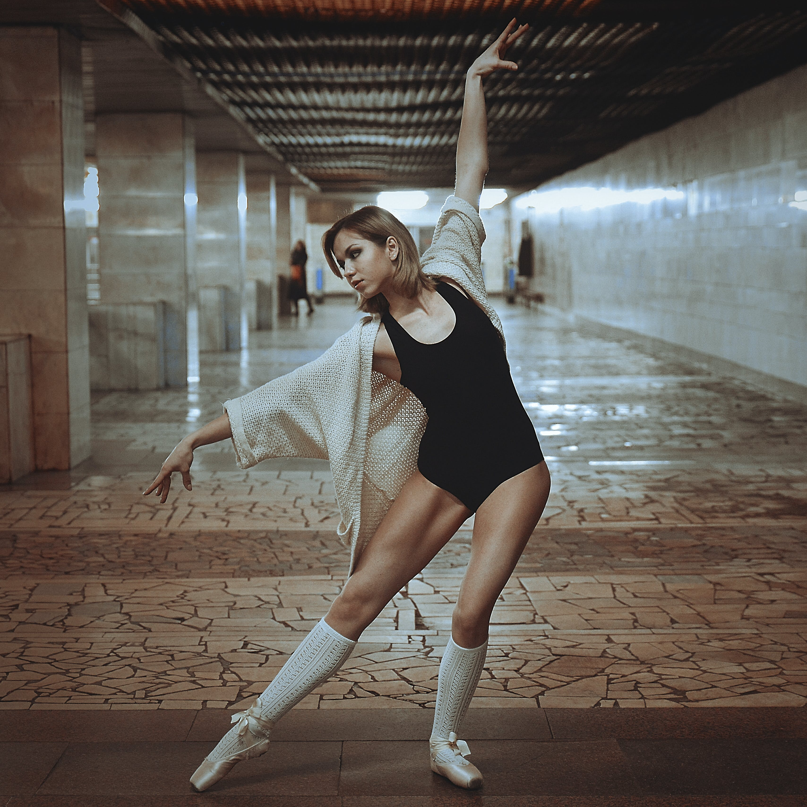